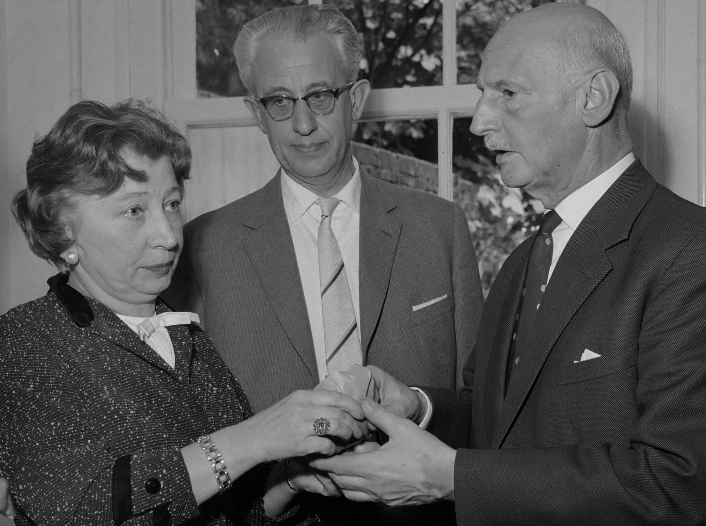

Conheça a mulher que ajudou os Frank durante a 2ª Guerra Mundial
Hermine Santruschitz-Gies, mais conhecida por Miep Gies, foi uma secretária e contadora austríaca.Ela ganhou atenção mundial por ter ajudado a família de Anne Frank e outras sete pessoas a se esconder dos nazistas no Anexo Secreto, durante a Segunda Guerra Mundial.Quando foram capturados pela Schutzstaffel, ela tentou, sem sucesso, subornar o sargento Karl Silberbauer para os libertarem.
"But even an ordinary secretary or a housewife or a teenager can, within their own small ways, turn on a small light in a dark room."
Sua história
Em 1993, ela começou a trabalhar com Otto Frank, um homem de negócios que havia se mudado com sua família para a Alemanha, com a esperança de que eles não fossem perseguidos pelos Nazistas, pois eram judeus. Gies tornou-se uma amiga próxima, e auxiliou-os durante os dois anos que passaram escondidos.
Ela recuperou o diário de Anne Frank logo após a família ter sido presa e o manteve guardado até se reencontrar com Otto Frank em 1945. Ela ficou feliz que o diário não foi revelado, senão teria que destruí-lo, já que nele havia todas as identidades das pessoas que ajudaram os Frank.
Gies publicou o livro Anne Frank Remembered: The Story of the Woman Who Helped to Hide the Frank Family, publicado em 1987.
